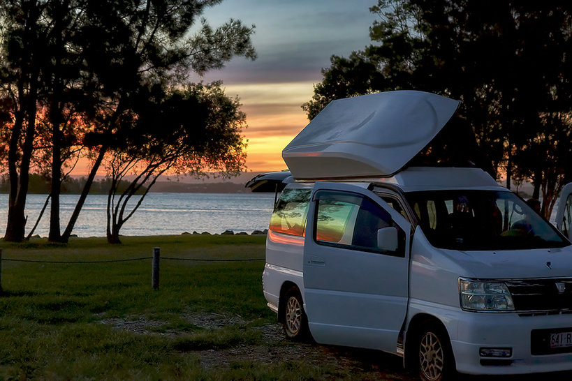

Samotna czerwona góra położona na środku pustyń i na środku Australii. Największy monolit na świecie czyli największa skała. Obwód ma ponad 10km a obejście góry zajmuje 4h – w pełnym słońcu jest przeżyciem męczącym ale także mistycznym. Święta góra Aborygenów, będąca ich największym miejscem kultu. Zamiast wchodzić na szczyt bezczeszcząc ich święte miejsce lepiej obejść ją dookoła lub zobaczyć ją o zachodzie słońca kiedy w ciągu kilku chwil zmienia kolory w zachwycający sposób.
Piaszczysta pustynia z wystającymi pionowymi piaskowymi skałami tworzy księżycowy krajobraz po którym można jeździć samochodem. Do tego jeszcze można spotkać tam emu – robi wrażenie.
Wave Rock to jedna z najciekawszych formacji skalnych Australii Zachodniej i obowiązkowy przystanek dla każdego zainteresowanego choć w najmniejszym stopniu geologią i wrażliwego na piękno natury obieżyświata. Skała położona jest w pobliżu niewielkiej miejscowości Hyden, około 350 km na wschód od Perth – głównego miasta w stanie Australia Zachodnia.
Rajska lazurowa woda, przepiękne piaszczyste plaże i rafa, która zaczyna się kila metrów od brzegu i bez specjalnego sprzętu można w niej nurkować i zobaczyć podwodny świat. I to za darmo w przeciwieństwie do Wielkiej Rafy która zaczyna się 10km od brzegu i żeby ją zobaczyć trzeba wydać kilkaset złotych na wycieczkę.
Miasto w którym się zakochaliśmy. Jego nazwa w języku aborygeńskim oznacza “białego człowieka w dziurze”. Miasto poszukiwaczy opali czyli najdroższych kamieni świata, położone w samym sercu australijskich pustyń, gdzie jest tak gorąco że ludzie budują domy pod ziemią. To tu przebiega najdłuższy płot na świecie – dingo fence. Tu kręcono Mad Maxa, a motele i kościoły są budowane pod ziemią. Niesamowity, nieziemski klimat.
12 Apostołów to słynne wapienne skały w Australii położone niedaleko Melbourne. Pod wpływem olbrzymiej siły fal oceanu oraz wiatru powstały kilkudziesięciu metrowej wysokości kolumny, które obecnie obmywają wody oceanu. Znajdują się kilkanaście, kilkadziesiąt metrów od brzegu. Pierwotna nazwa tego miejsca brzmiała „Maciora i prosiaki” (The sow and piglets), lecz była ona zbyt „mało atrakcyjna”, więc władze ją przemianowały. Pomimo że nigdy nie było tu 12 skał to ze względu na stosunkową ich bliskość wobec siebie, nazwano miejsce bardziej „marketingowo” – 12 Apostołów.
CO MUSISZ WIEDZIEĆ O WYPRAWIE W GŁĄB KRAJU
Zapas wody jest konieczny. Przyda się też bidon – butelkowana woda jest droga, a można pić tę z kranu.
Najlepszy i jedyny operator sieci komórkowej, który na outbacku ma zasięg, to Telstra.
Bez względu na porę roku przyda się ciepła bluza. Zabierzcie też krem z wysokim filtrem i muzykę na przenośnym dysku – radio bywa zawodne.
Olejek herbaciany odstrasza natarczywe muchy.
Najpopularniejszymi i najlepszymi hostelami w Australii są te sieci YHA. Ceny za łóżko w wieloosobowej sali zaczynają się od 25 AUD, a własny pokój kosztuje nie mniej niż 80. Atrakcyjne cenowo są też motele, które często są jedynym wyborem na outbacku. Dla tych, którzy jadą kamperem albo mają ze sobą namiot, najciekawszym i najtańszym rozwiązaniem będą kempingi w parkach narodowych, gdzie opłaty są symboliczne. Często jedyną wygodą będzie wychodek, ale niektóre mają świetne zaplecze z łazienkami i kuchnią. Sporo droższe będą tzw. caravan parks – zazwyczaj prywatne pola kempingowe z dobrym zapleczem. W Australii wciąż da się znaleźć miejsca, gdzie spać można legalnie „na dziko”. Alternatywą są noclegi w gospodarstwach tzw. farm stays. Nieoceniona w wyszukiwaniu kempingów i atrakcji po drodze jest aplikacja WikiCamps.
Świetnym rozwiązaniem są tzw. relokacje aut, czyli przestawianie kamperów z punktów B do A, często za symboliczną opłatą lub zupełnie za darmo. Gdy, przykładowo, ktoś wypożyczy auto w Sydney i odda je w oddalonym o 3 tys. kilometrów Cairns, ktoś to auto musi przywieźć z powrotem do bazy. Wypożyczalnie, zamiast zatrudniać kierowców, udostępniają samochody turystom. Relokacje wiążą się z ograniczeniami: na przejazd mamy określoną ilość dni w danym terminie. Najlepsze przeglądarki do wyszukiwania ofert to Imoova i Transfercar.
